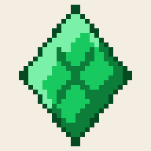
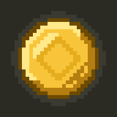

#6e4a00, bevel #ffe98a / #b57e10, face #f8c53a, embossed diamond #e5ad1e — the in-app coin's exact palette, redrawn at twice its grid so the icon carries detail the 16px sprite cannot.#2b2b24: the app's own ink, the colour every border and every piece of body text is already made of. Nothing invented for the icon.
icon-192.png · 32×6, purpose anyicon-512.png · 32×16, purpose anyicon-maskable-192.png · 32×6, purpose maskable — new, the repo has no 192 maskableicon-maskable-512.png · 32×16 — replaces maskable-512.png, note the renameapple-touch-icon.png · 180 is not a multiple of 32, so the master goes down at ×5 = 160 and sits centred on a 180 ink ground with a 10px border. Composed, never resampled. New — the index currently points apple-touch-icon at the 192.favicon-32.png · the master at ×1. New — the index currently uses the 192 as its favicon.master-32.png · the source of truth, for regeneration.

short_name is "Haley", but name is "Haley's Routine & Coins" and any launcher that prefers name clips it mid-word. It also puts her name in the repository.name Gold Chestshort_name Gold Chest · 10 of 12<title> Gold Chestname with a tagline is a web habit; this is an installed app whose name appears under an icon and in a task switcher, and both want the short one. No child's name in any of them, so the build stops depending on CHILD_NAME for its identity.#f3eee1#f3eee1 under every world theme. The placeholder happens to be correct; it stays.#f3eee1, AND THEY AGREE#f3eee1 and the index meta says #f3eee1. No contradiction to resolve.gen-icons.mjs; the opaque plate; background_color; theme_color; display: standalone, orientation: portrait, relative start_url and scope.APP_NAME, APP_SHORT_NAME and APP_DESCRIPTION are all derived from CHILD_NAME in profile.ts, so the installed identity is "Haley's Routine & Coins" / "Haley". The app's public identity should stop deriving from the child entirely and become app-wide constants. PROFILE_ID must not be touched — it names the database.APP_DESCRIPTION reads "Routines, timers and Minecoin rewards". In-app copy may reference real Minecoins; install metadata is not in-app copy. Suggested: "Do your day, earn gold."The artwork is final and regenerable from master-32.png. The name is the household's call — say which of the five and I will write it into the export's README as the one value, or draw more if none of them is what she would actually say.